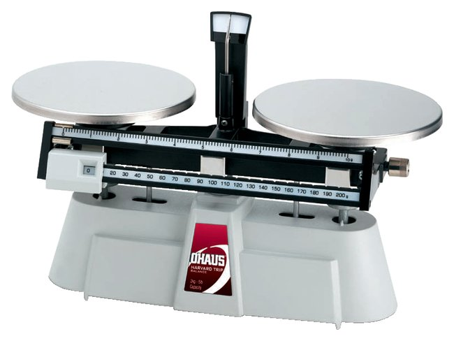

တကယ်တော့ ဒြပ်ထု နဲ့ အလေးချိန် ဆိုတာ မတူပါဘူး။ ဒြပ်ထု ဆိုတာက စကြာဝဠာထဲ ဘယ်နေရာပဲ ရောက်ရောက် မပြောင်းလဲ သွားပါဘူး။ ကမ္ဘာပေါ်မှာ ၁၀ ကီလိုဂရမ် ဒြပ်ထုရှိတဲ့ ပစ္စည်း တစ်ခုဟာ လကမ္ဘာ ပေါ်မှာလဲ ၁၀ ကီလိုဂရမ်ပဲ ဒြပ်ထု ရှိနေမှာ ဖြစ်ပါတယ်။ အင်္ဂါဂြိုဟ်ပေါ် ရောက်သွားလဲ သူ့ရဲ့ ဒြပ်ထုက ၁၀ ကီလိုဂရမ်ပဲ ရှိနေမှာပါ။
အလေးချိန် (weight) ကတော့ စကြာဝဠာရဲ့ တစ်နေရာနဲ့ တစ်နေရာ မတူပါဘူး။ ကမ္ဘာပေါ်မှာ ၁၀ ကီလိုဂရမ် လေးတဲ့ အရာဝတ္ထု တစ်ခုဟာ လကမ္ဘာ ပေါ်မှာ အလေးချိန် ၆ ပုံ ၁ ပုံပဲ လေးတော့မှာ ဖြစ်ပါတယ်။
တကယ်တော့ ကျွန်တော်တို့ ကမ္ဘာပေါ်က ပေါင်ချိန်စက် တွေမှာ ကီလို ဂရမ်နဲ့ ပြနေတာမို့ အားလုံးက အလေးချိန်ကို ကီလိုဂရမ် (kilogram) နဲ့ ပြောနေကြ ပေမယ့် တကယ်တော့ မမှန် ပါဘူး။ ရူပဗေဒ မှာတော့ အလေးချိန် ကို ပြတဲ့ ယူနစ်သည် နယူတန် (Newton) ဖြစ်ပါတယ်။ ဒါ့ကြောင့် တကယ်တမ်း အလေးချိန်ကို ပြောမယ်ဆို နယူတန် (N) နဲ့ ပြောမှ မှန်မှာ ဖြစ်ပါတယ်။
ကီလို ဂရမ် ဆိုတာက တကယ်တော့ ဒြပ်ထုကို တိုင်းတဲ့ ယူနစ်ပါ။
ဆက်စပ်ဆောင်းပါး – ဆွဲငင်အား (Gravity) ဆိုတာဘာလဲ
ဒြပ်ထုဆိုတာဘာလဲ
ဒြပ်ထုဆိုတာ တကယ်တော့ အင်နားရှားကို တိုင်းတဲ့ အတိုင်းအတာ တစ်ခု ဖြစ်ပါတယ်။ တနည်းအားဖြင့် အရာဝတ္ထု တစ်ခုရဲ့ အပြောင်းအလဲကို ဆန့်ကျင်တဲ့ အစွမ်းပဲ ဖြစ်ပါတယ်။ဒီနေရာမှာ အပြောင်းအလဲ ဆိုတာက လှုပ်ရှားမှု အပြောင်းအလဲ ကို ဆိုလိုတာပါ။ ဥပမာ ရပ်နေတဲ့ အရာ ဝတ္ထု တစ်ခုကို စပြီး ရွှေ့အောင် လုပ်ဖို့ အားစိုက်ရပါတယ်။ ဒီ အရာဝတ္ထုရဲ့ ဒြပ်ထု များလေလေ သူ့ကို စပြီး ရွှေ့အောင် အားပို စိုက်ရ လေလေပါပဲ။
ဒါကို ကားတွန်းတဲ့ အခါမျိုးမှာ သတိပြုမိမှာပါ။ ကားက စစချင်း တွန်းရင် အရမ်း အားစိုက် ရပါတယ်။ ဘာကြောင့်လဲ ဆိုတော့ သူ့ရဲ့ အင်အားရှား ဆိုတဲ့ မူလ အတိုင် နေမြဲတိုင်း နေလိုတဲ့ အစွမ်းကြောင့် ဒီ အင်နားရှားကို လွန်အောင် တွန်းရတာ မို့ပါ။
ဒြပ်ထု သေးတဲ့ လူစီး ကားသေးလေးကို တွန်းရတာနဲ့ ဒြပ်ထု ကြီးတဲ့ ဘတ်စ်ကားကြီး တွန်းရတာလဲ မတူပါဘူး။ ဒြပ်ထု သေးတဲ့ လူစီးကားလေးက အင်နားရှားလဲ နည်းတာမို့ သူ့ကို လူ ၁ ယောက် ၂ ယောက်လောက် တွန်းလိုက်ရင်ကို အလွယ်တကူ ရွေ့သွားပါတယ်။
ဒါပေမယ့် ဒြပ်ထု ကြီးတဲ့ ဘတ်စ်ကား ကြီးကျတော့ အင်နားရှားကလဲ ကြီးတာမို့ သူ့ကို ရွေ့အောင် လုပ်ဖို့ ဆိုရင် အားလဲ များများ စိုက်ရပါတယ်။ ဒါ့ကြောင့် ဘတ်စ်ကားကြီး တစ်စင်းကို ရွှေ့အောင် တွန်းဖို့ဆို လူလဲ အများအပြား လိုအပ်တာ ဖြစ်ပါတယ်။ သူ့ရဲ့ ပိုကြီးတဲ့ အင်နားရှားကို ကျော်အောင် ပိုကြီးတဲ့ အားနဲ့ တွန်းရတာ ဖြစ်ပါတယ်။
အရာဝတ္ထု တစ်ခုရဲ့ ဒြပ်ထု ပမာဏဟာ သူ့မှာ ပါတဲ့ အက်တမ် ပမာဏနဲ့ ဒီ အက်တမ်တွေ တစ်လုံးချင်း စီကို ဖွဲ့စည်း တည်ဆောက်ထားတဲ့ ပရိုတွန်၊ နျူထရွန် နဲ့ အီလက်ထရွန် တွေ အပေါ်မှာ မူတည်ပါတယ်။
ဒြပ်ထု ပမာဏ ကြီးမား လေလေ၊ အင်နားရှား များလေလေ ဖြစ်ပါတယ်။ ဘာကြောင့်ဆို ဒြပ်ထု ကြီးတော့ ရွေ့အောင် တွန်းရမယ့် ပစ္စည်း ပမာဏ ကလဲ ပိုများလာတာကိုး။
အနည်းဆုံးတော့ ဒါက အိုင်းဇက် နယူတန် ရဲ့ ဒြပ်နဲ့ အင်နားရှားနဲ့ ပတ်သက်တဲ့ အယူအဆ ဖြစ်ပါတယ်။ ဒီအယူအဆက အလင်းလျင် နှုန်း နီးပါး သွားတဲ့ ဝတ္ထုတွေ အတွက်တော့ အတိအကျ မှန်ကန်မှု မရှိပါဘူး။ ဒါပေမယ့် ဒီအကြောင်းကိုတော့ နောက် ဆောင်းပါး တစ်စောင် သပ်သပ် ရေးပါမယ်။
ဆက်စပ်ဆောင်းပါး – နယူတန်ရဲ့ ဆွဲငင်အားနဲ့ အိုင်းစတိုင်းရဲ့ ဆွဲငင်အား ဘာကွာလဲ
အလေးချိန်ဆိုတာကရော
အလေးချိန် ဆိုတာကတော့ အရာ ဝတ္ထု တစ်ခု အပေါ်မှာ ဆွဲငင်အား (Gravity) က သက်ရောက်တဲ့ (တနည်းအားဖြင့် အောက်ကို ဆွဲချတဲ့) “အား (Force)” ဖြစ်ပါတယ်။ဒီ ဆွဲငင်အားဟာ အရာဝတ္ထုရဲ့ ဒြပ်ထု ပေါ် မူတည်ပြီး ကွာခြားပါတယ်။ ဒြပ်ထု ကြီးလေလေ ဆွဲအား များလေလေ ဖြစ်ပါတယ်။
ဒါ့ကြောင့် ကမ္ဘာနဲ့ လ ယှဉ်ရင် ကမ္ဘာက ဒြပ်ထု ၆ ဆ လောက် ပိုကြီးတာမို့ ကမ္ဘာ့ ဆွဲအားကလဲ လ ရဲ့ ဆွဲအားထက် ၆ ဆ လောက် ပိုများရတာ ဖြစ်ပါတယ်။ ကမ္ဘာ့ မြေမျက်နှာပြင်မှာ ရှိတဲ့ ဆွဲအားဟာ တစ် ကီလိုဂရမ် ဒြပ်ထု ရှိတဲ့ အရာဝတ္ထု တစ်ခု အပေါ်မှာ ၉.၈ နယူတန် (9.8 Newton) အား သက်ရောက် နေပါတယ်။
ဒီနေရာမှာ ကြားဖြတ်ပြီး ပြောချင်တာက အရာဝတ္ထု နှစ်ခု အပြန်အလှန် ဆွဲတဲ့ ဆွဲငင်အားဟာ ဒီ အရာ ဝတ္ထု နှစ်ခုလုံးရဲ့ ဒြပ်ထု နဲ့ တိုက်ရိုက် အချိုးကျပါတယ်။ ကမ္ဘာရဲ့ ဒြပ်ထု က ကြီးလွန်းလို့သာ ကမ္ဘာ ပေါ်က အရာ ဝတ္ထု တွေ သေးသေး ကြီးကြီး ဆွဲအား အတူ ခံစားရ သလို ဖြစ်နေတာပါ။
(ကမ္ဘာပေါ်မှာ ရှိတဲ့ ဘယ်လောက် ကြီးတဲ့ အရာဝတ္ထု ဖြစ်ဖြစ် ကမ္ဘာ့ ဒြပ်ထုနဲ့ ယှဉ်လိုက်တော့ မပြောပလောက်ဘူး ဖြစ်သွားတာ မို့ပါ။)
ဒါဆို ဘာလို့ ဒြပ်ထုနဲ့အလေးချိန်ကို အတူတူလို ထင်နေကြတာလဲ
ကျွန်တော်တို့ ကမ္ဘာပေါ်မှာ နေပြီး ကမ္ဘာ့ဆွဲအားကို စံအနေနဲ့ ထားပြီး တွက်ချက် တိုင်းထွာ နေကြလို့သာ ဒြပ်ထု နဲ့ အလေးချိန် အတူတူလို ပြောဆိုနေ ကြတာ ဖြစ်ပါတယ်။ ဥပမာ လူ တစ်ယောက် ကမ္ဘာပေါ်မှာ ၇၀ ကီလို လေးတယ် ဆိုရင် သူ့ ဒြပ်ထု ကလဲ ၇၀ ကီလိုပဲ ဖြစ်နေပါတယ်။ လပေါ် ရောက်သွားလဲ သူ့ဒြပ်ထုက ၇၀ ကီလိုပဲ ဆက်ရှိနေမှာပါ။ ဒါပေမယ့် သူ့ အလေးချိန် ကတော့ လပေါ်မှာ ပေါင်ချိန်စက် နဲ့ တိုင်းကြည့်ရင် ၁၂ ကီလို လောက်ပဲ ရှိတော့တာ တွေ့ကြရ မှာပါ။တကယ်တော့ ရူပဗေဒ အရ အတိအကျ ပြောရမယ်ဆို ကမ္ဘာပေါ်က သူ့ရဲ့ တကယ့် အလေးချိန်ကို နယူတန် နဲ့ ပြရမှာ ဖြစ်ပါတယ်။
ဒီ တော့ သူ့ တကယ့် အလေးချိန်ဟာ ၇၀ ကီလို (ဒြပ်ထု) x ၉.၈ (ကမ္ဘာ့ဆွဲအား ကိန်းသေ g) = ၆၈၆ နယူတန် ဖြစ်ပါတယ်။ သူ့အလေးချိန်ဟာ ၆၈၆ နယူတန် ရှိတယ်လို့ ပြောမှ မှန်မှာ ဖြစ်ပါတယ်။ (ဒါပေမယ့် အဲ့လို သွားပြောရင် ဘုကြည့်ကြည့်တာ လဲ ခံရပါ လိမ့်မယ်။)
လပေါ်မှာ ကျတော့ လဆွဲအားက ကမ္ဘာ့ ဆွဲအားရဲ့ ၆ ပုံ ၁ ပုံလောက်ပဲ ရှိပါတယ်။ (သူက ဒြပ်ထု နည်းတယ်လေ)။ ဒီတော့ လရဲ့ ဆွဲအား ကိန်းသေ g ကလဲ ၁.၆ ပဲ ရှိပါတယ်။
ဒီတော့ လပေါ် ရောက်သွားရင် သူ့ရဲ့ အလေးချိန်ဟာ ၇၀ ကီလို (ဒြပ်ထု) x ၁.၆ (လ ဆွဲအား ကိန်းသေ g) = ၁၁၂ နယူတန် ပဲ ရှိပါတော့မယ်။ ဒါဟာ ၁၁.၅ ကီလို ဂရမ်လောက် ဒြပ်ထု ရှိတဲ့ အရာဝတ္ထု တစ်ခုရဲ့ ကမ္ဘာပေါ်က အလေးချိန်ပါ။
ဒီတော့ ကမ္ဘာပေါ်က ပေါင်ချိန်စက် လပေါ်ယူသွားပြီး တိုင်းရင် သူ့ အလေးချိန်ကို ၁၁.၅ ကီလို ဆိုပြီးပဲ ပြနေမှာ ဖြစ်ပါတယ်။ (ပေါင်ချိန်စက် တွေက စပရင် ခံပြီး ပြုလုပ် ထားတာမို့ အလေးချိန်ကိုပဲ တိုင်းနိုင်ပါတယ်။ ဒါကို နယူတန် နဲ့ မပြပဲ လူအများ နားလည်တဲ့ ကီလို နဲ့ ပြကြတာ ဖြစ်ပါတယ်။)
ဒါဆိုလပေါ်မှာ ဒြပ်ထုကို မှန်မှန်ကန်ကန် တိုင်းနိုင်တဲ့နည်းရှိသလား
အလေးချိန် မတိုင်းပဲ ဒြပ်ထုကို တိုင်းဖို့ဆို ဒြပ်တိုင်းတဲ့ ချိန်စက်ကို အသုံးပြု ရမှာ ဖြစ်ပါတယ်။ဒြပ်တိုင်းတဲ့ ချိန်စက် ဆိုလို့ သိပ် ထူးထူး ဆန်းဆန်း မဟုတ်ပါဘူး။ ပွဲရုံတွေမှာ ရှေးက သုံးတဲ့ ကတ္တားချိန်စက် တွေ တွေ့ဖူးတယ် မဟုတ်လား။ အခုခေတ် နောက်မှ ပေါ်တဲ့ စပရင် နဲ့ လက်တံနဲ့ ကတ္တားကို ပြောတာ မဟုတ်ဘူးနော်။ အလေးတုံးနဲ့ ချိန်တဲ့ Balanced scale ကို ပြောတာ။ အောက်က ပုံကလို ဟာမျိုး။

ဒီလို balanced scale ချိန်ခွင် မျိုးကို လကမ္ဘာကို ယူသွားပြီး တိုင်းမယ် ဆိုရင်တော့ ဒြပ်ထု (mass) ကို မှန်မှန် ကန်ကန် တိုင်းနိုင်မှာ ဖြစ်ကြောင်းပါ။
— မောင်သူရ —